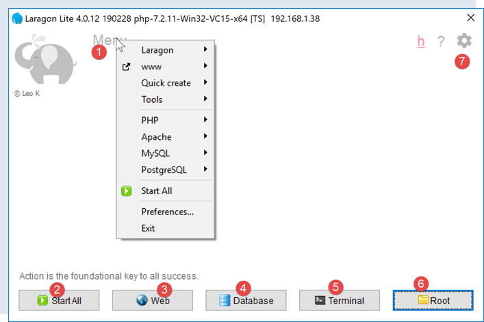
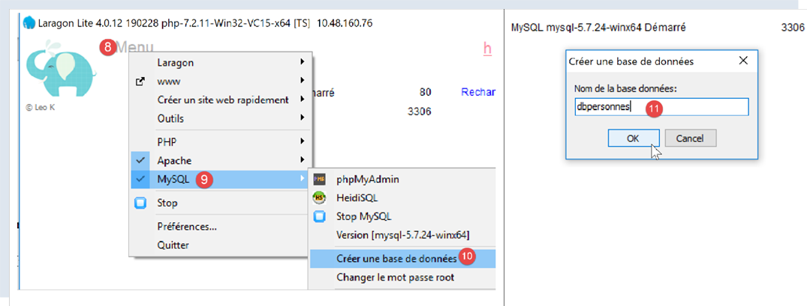
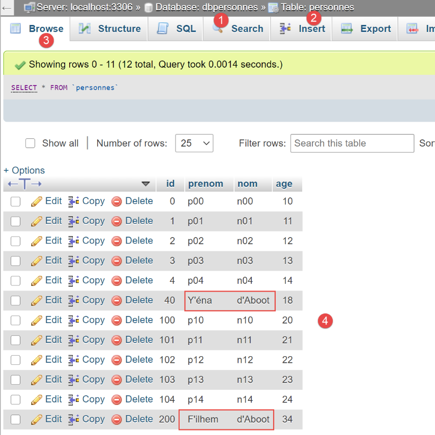

16. Using the MySQL DBMS

16.1. Installing the MySQL DBMS
To use the MySQL DBMS, we will install the Laragon software.
16.1.1. Installing Laragon
Laragon is a package that combines several software components:
- an Apache web server. We will use it to write web scripts in Python;
- the MySQL DBMS;
- the PHP scripting language, which we will not use;
- a Redis server that implements a cache for web applications. We will not use it;
Laragon can be downloaded (February 2020) at the following address:


- The installation [1-5] results in the following directory structure:

- in [6] the PHP installation folder (not used in this document);
Launching [Laragon] displays the following window:

- [1]: the Laragon main menu;
- [2]: the [Start All] button launches the Apache web server and the MySQL database;
- [3]: The [WEB] button displays the web page [http://localhost];
- [4]: the [Database] button allows you to manage the MySQL database management system using the [phpMyAdmin] tool. You must install this tool beforehand;
- [5]: the [Terminal] button opens a command terminal;
- [6]: The [Root] button opens a Windows Explorer window positioned on the [<laragon>/www] folder, which is the root directory of the [http://localhost] website. This is where you should place the static web applications managed by Laragon’s Apache server;
16.1.2. Creating a Database
We will now show you how to create a database and a MySQL user using the Laragon tool.

- Once launched, Laragon [1] can be managed from a menu [2];
- In [3-5], install the MySQL administration tool [phpMyAdmin] if it has not already been installed;

- In [6], start the Apache web server and the MySQL database management system;
- In [7], the Apache server is launched;
- In [8], the MySQL database management system is launched;

- In [8-10], create a database named [dbpersonnes] [11]. We will build a database of people;

- in [11], we will manage the database we just created;

- The [Databases] operation sends a web request to the URL [http://localhost/phpmyadmin] [12]. The Laragon Apache web server responds. The URL [http://localhost/phpmyadmin] is the URL for the [phpMyAdmin] utility that we installed earlier [5]. This utility allows you to manage MySQL databases;
- by default, the database administrator’s login credentials are: root [13] with no password [14];

- in [16], the database we created earlier;

- for now, we have a database [dbpersonnes] [17] that is empty [18];
We create a user [admpersonnes] with the password [nobody] who will have full privileges on the [dbpersonnes] database:

- in [19], we are positioned on the database [dbpersonnes];
- in [20], we select the [Privileges] tab;
- in [21-22], we see that the user [root] has full privileges on the [dbpersonnes] database;
- in [23], we create a new user;

- in [25-26], the user will have the username [admdbpersonnes];
- in [27-29], their password will be [nobody];
- in [30], phpMyAdmin warns that the password is very weak (easy to crack). In production, it is preferable to generate a strong password using [31];
- in [32], we specify that the user [admdbpersonnes] must have full privileges on the [dbpersonnes] database;
- in [33], we validate the information provided;

- in [35], phpMyAdmin indicates that the user has been created;
- In [36], the SQL query that was executed on the database;
- In [37], the user [admpersonnes] has full privileges on the [dbpersonnes] database;
Now we have:
- a MySQL database [dbpersonnes];
- a user [admpersonnes/nobody] who has full privileges on this database;
16.2. Installing the [mysql-connector-python] package
We will write Python scripts to use the database created earlier with the following architecture:

A connector is used to isolate the Python code from the DBMS being used. There are connectors for different DBMSs, and they all follow the same interface. So when we replace the MySQL DBMS with the PostgreSQL DBMS in the example above, the architecture becomes as follows:

Because all DBMS connectors adhere to the same interface, the Python script normally does not need to be modified. In reality, most DBMSs use proprietary SQL:
- they comply with the SQL (Structured Query Language) standard;
- but extend it—since it is not sufficient on its own—with proprietary language extensions;
Therefore, it is common that when switching DBMSs, SQL modifications must be made to the scripts.
By default, Python does not offer the ability to manage a MySQL database. To do so, you must download a package. There are several available. Here, we will use the [mysql-connector-python] package, which is the official connector from Oracle, the company that owns MySQL.
The package will be installed in a Pycharm [Terminal] window:

- the directory in [2] is irrelevant for what follows;
In the terminal, type the command [pip search MySQL]:
- [pip] (Package Installer for Python) is the tool for installing Python packages. The [pip] tool connects to the repository containing Python packages;
- [search MySQL]: retrieves a list of packages containing the term [MySQL] (case-insensitive) in their names;
The results of the command are as follows:
mysql (0.0.2) - Virtual package for MySQL-python
jx-mysql (3.49.20042) - jx-mysql - JSON Expressions for MySQL
weibo-mysql (0.1) - insert mysql
bits-mysql (1.0.3) - BITS MySQL
MySQL-python (1.2.5) - Python interface to MySQL
deployfish-mysql (0.2.13) - Deployfish MySQL plugin
mtstat-mysql (0.7.3.3) - MySQL Plugins for mtstat
bottle-mysql (0.3.1) - MySQL integration for Bottle.
WintxDriver-MySQL (2.0.0-1) - MySQL support for Wintx
py-mysql (1.0) - Operating MySQL for Python.
mysql-utilities (1.4.3) - MySQL Utilities 1.4.3 (part of MySQL Workbench Distribution 6.0.0)
…. - Tool to move data slices from one MySQL store to another
mysql-tracer (2.0.2) - A MySQL client to run queries, generate execution reports, and export results
mysql-utils (0.0.2) - A simple MySQL library including a set of utility APIs for Python database programming
mysql-connector-repackaged (0.3.1) - MySQL driver written in Python
dffml-source-mysql (0.0.5) - DFFML Source for MySQL Protocol
mysql-connector-python (8.0.19) - MySQL driver written in Python
INSTALLED: 8.0.19 (latest)
prometheus-mysql-exporter (0.2.0) - MySQL query Prometheus exporter
backwork-backup-mysql (0.3.0) - Backwork plugin for MySQL backups.
django-mysql-manager (0.1.4) - django-mysql-manager is a Django-based management interface for MySQL users and databases.
…. - mysql operate
C:\Data\st-2020\dev\python\cours-2020\v-01>
All modules whose name or description contains the keyword MySQL have been listed. The one we will use (Feb 2020) is [mysql-connector-python], line 17. To install it, type the command [pip install -U mysql-connector-python] in the terminal:
C:\Data\st-2020\dev\python\cours-2020\v-01>pip install -U mysql-connector-python
Collecting mysql-connector-python
Using cached mysql_connector_python-8.0.19-py2.py3-none-any.whl (355 kB)
Requirement already satisfied, skipping upgrade: protobuf==3.6.1 in c:\myprograms\python38\lib\site-packages (from mysql-connector-python) (3.6.1)
Requirement already satisfied, skipping upgrade: dnspython==1.16.0 in c:\myprograms\python38\lib\site-packages (from mysql-connector-python) (1.16.0)
Requirement already satisfied, skipping upgrade: six>=1.9 in c:\users\serge\appdata\roaming\python\python38\site-packages (from protobuf==3.6.1->mysql-connector-python) (1.14.0)
Requirement already satisfied, skipping upgrade: setuptools in c:\myprograms\python38\lib\site-packages (from protobuf==3.6.1->mysql-connector-python) (41.2.0)
Installing collected packages: mysql-connector-python
Successfully installed mysql-connector-python-8.0.19
- Line 1: The [install -U] option (U=upgrade) requests the latest version of the various packages associated with the [mysql-connector-python] package;
To see which packages are installed in our machine’s Python environment, type the command [pip list]:
C:\Data\st-2020\dev\python\cours-2020\v-01>pip list
Package Version
---------------------- ----------
asgiref 3.2.3
astroid 2.3.3
atomicwrites 1.3.0
attrs 19.3.0
certifi 2019.11.28
…
MarkupSafe 1.1.1
mccabe 0.6.1
more-itertools 8.1.0
mysql-connector-python 8.0.19
mysqlclient 1.4.6
packaging 20.0
pip 20.0.1
pipenv 2018.11.26
…
- Line 13: We have the [mysql-connector-python] package;
To learn how to use the [mysql-connector-python] package to manage a MySQL database, visit the package’s website |https://dev.mysql.com/doc/connector-python/en/|. The following section presents a series of examples.
16.3. script [mysql_01]: connecting to a MySQL database - 1
The [mysql_01] script demonstrates the first step in using a database. It will allow us to verify that we can connect to the [dbpersonnes] database created earlier.
# Import the mysql.connector module
from mysql.connector import connect, DatabaseError, InterfaceError
# Connecting to a MySQL database [dbpersonnes]
# The user credentials are (admpersonnes, nobody)
USER = "admpersonnes"
PWD = "nobody"
HOST = "localhost"
DATABASE = "dbpersonnes"
# Let's go
connection = None
try:
print("Connecting to the MySQL DBMS...")
# connection
connection = connect(host=HOST, user=USER, password=PWD, database=DATABASE)
# tracking
print(
f"MySQL connection successful to database={DATABASE}, host={HOST} using user={USER}, password={PWD}")
except (InterfaceError, DatabaseError) as error:
# display the error
print(f"The following error occurred: {error}")
finally:
# close the connection if it was opened
if connection:
connection.close()
Notes
- Line 2: Import certain functions and classes from the [mysql.connector] module;
- Lines 6–7: The credentials of the user who will connect;
- line 8: the machine hosting the database. The MySQL connector allows you to work with a remote database;
- line 9: the name of the database we want to connect to;
- lines 11–26: the script will connect (line 16) the user [admpersonnes / nobody] to the database [dbpersonnes];
- lines 20–26: the connection may fail. Therefore, it is handled within a try/except/finally block;
- line 16: the connect method of the [mysq.connector] module accepts various named parameters:
- user: the user owning the connection [admpersonnes];
- password: user password [nobody];
- host: MySQL DBMS machine [localhost];
- database: the database to connect to. Optional.
- line 20: if an exception is raised, it is of type [DatabaseError] or [InterfaceError];
- lines 23–26: in the [finally] clause, the connection is closed;
Results
16.4. script [mysql_02]: connecting to a MySQL database - 2
In this new script, the database connection is encapsulated in a function:
# Import the mysql.connector module
from mysql.connector import DatabaseError, InterfaceError, connect
# ---------------------------------------------------------------------------------
def connection(host: str, database: str, login: str, pwd: str):
# connects and then disconnects (login, pwd) from the [database] on the [host] server
# raises a DatabaseError exception if there is a problem
connection = None
try:
# connection
connection = connect(host=host, user=login, password=pwd, database=database)
print(
f"Connection successful to database={database}, host={host} as user={login}, passwd={pwd}")
finally:
# Close the connection if it was opened
if connection:
connection.close()
print("Disconnection successful\n")
# ---------------------------------------------- main
# connection credentials
USER = "admpersonnes"
PASSWD = "nobody"
HOST = "localhost"
DATABASE = "dbpeople"
# Log in an existing user
try:
connect(host=HOST, login=USER, pwd=PASSWD, database=DATABASE)
except (InterfaceError, DatabaseError) as error:
# display the error
print(error)
# connection for a non-existent user
try:
connect(host=HOST, login="xx", pwd="xx", database=DATABASE)
except (InterfaceError, DatabaseError) as error:
# display the error
print(error)
Notes:
- lines 6–19: a [connection] function that attempts to connect and then disconnect a user from the [dbpersonnes] database. Displays the result;
- lines 29–41: main program – calls the connection method twice and displays any exceptions;
Results
16.5. script [mysql_03]: creating a MySQL table
Now that we know how to establish a connection with a MySQL DBMS, we can start issuing SQL commands over this connection. To do this, we will connect to the created database [dbpersonnes] and use the connection to create a table in the database.
# imports
import sys
from mysql.connector import DatabaseError, InterfaceError, connect
from mysql.connector.connection import MySQLConnection
# ---------------------------------------------------------------------------------
def execute_sql(connection: MySQLConnection, update: str):
# executes an update query on the connection
cursor = None
try:
# request a cursor
cursor = connection.cursor()
# executes the update query on the connection
cursor.execute(update)
finally:
# Close the cursor if it was obtained
if cursor:
cursor.close()
# ---------------------------------------------- main
# connection credentials
# user identity
ID = "admpersonnes"
PWD = "nobody"
# the DBMS host machine
HOST = "localhost"
# Database name
DATABASE = "dbpeople"
# Let's take it step by step
try:
# connection
connection = connect(host=HOST, user=ID, password=PWD, database=DATABASE)
# AUTOCOMMIT mode
connection.autocommit = True
except (InterfaceError, DatabaseError) as error:
# display the error
print(f"The following error occurred: {error}")
# exit
sys.exit()
# delete the people table if it exists
# if it doesn't exist, an error will occur—we ignore it
query = "drop table people"
try:
execute_sql(connection, query)
except (InterfaceError, DatabaseError):
pass
# Create the people table
query = "create table people (id int PRIMARY KEY, first_name varchar(30) NOT NULL, last_name varchar(30) NOT NULL, age integer NOT NULL, " \
"unique(last_name, first_name)) "
try:
# execute query
execute_sql(connection, query)
# display
print(f"{query}: query successful")
except (InterfaceError, DatabaseError) as error:
# display the error
print(f"The following error occurred: {error}")
finally:
# disconnect
connection.close()
Notes:
- line 9: the execute_sql function executes an SQL query on an open connection;
- line 14: SQL operations on the connection are performed through a special object called a cursor;
- line 14: obtaining a cursor;
- line 16: executing the SQL query;
- lines 17–20: whether there is an error or not, the cursor is closed. This frees the resources associated with it. If an exception occurs, it is not handled here. It will be propagated to the calling code;
- lines 33–43: creating a connection to the database;
- line 38: setting AUTOCOMMIT=True for a connection means that each query execution runs within an automatic transaction. The default mode is AUTOCOMMIT=False, where the developer is responsible for managing transactions. A transaction is a mechanism that encompasses the execution of multiple queries, from 1 to n. Either all of them succeed, or none of them succeed. Thus, if queries 1 through i succeed but query i+1 fails, then queries 1 through i will be "rolled back" so that the database returns to the state it was in before query 1 was executed;
- Here, there are two SQL queries (lines 49, 58). Each will be executed within a transaction. The fact that the second one fails has no impact on the first;
- lines 45–51: the SQL statement [drop table people] is executed. It deletes the table named [people]. If the table does not exist, an error may be reported. This error is ignored (line 51);
- lines 53–55: the command to create the [people] table. A table can be viewed as a set of rows and columns. The creation command specifies the column names:
- [id]: an integer identifier. It will be unique for each person. This will be the primary key (PRIMARY KEY). This means that within the table, this column never has the same value twice and can be used to identify a person;
- [last_name]: a string of up to 30 characters;
- [last_name]: a string of up to 30 characters;
- [age]: an integer;
- The [NOT NULL] attribute for each of these columns means that in a row of the table, none of the three columns can be empty;
- the parameter [unique(last_name, first_name)] is called a constraint. Here, the constraint on the rows is that the (last_name, first_name) tuple in the row must be unique in the table. This means that we can uniquely identify an individual in the table whose last name and first name are known;
- lines 56–60: execution of the SQL statement;
- lines 61–63: handling any exceptions;
- lines 64–66: disconnecting from the database;
Results
Verification with [phpMyAdmin]:

- the database [dbpersonnes] [1] has a table [personnes] [2] with the structure [3-4], the primary key [5], and the uniqueness constraint [6];
16.6. script [mysql_04]: executing an SQL command file
After previously creating the [personnes] table, we now populate it and then query it using SQL statements.
We want to execute the SQL statements from a text file:

The contents of the file [commands.sql] are as follows:
# deleting the [people] table
drop table people
# Create the people table
create table people (first_name varchar(30) not null, last_name varchar(30) not null, age integer not null, primary key (last_name, first_name))
# Insert two people
insert into people(first_name, last_name, age) values('Paul','Langevin',48)
insert into people(first_name, last_name, age) values ('Sylvie','Lefur',70)
# Displaying the table
SELECT first_name, last_name, age FROM people
# Intentional error
xx
# Insert three people
insert into people(first_name, last_name, age) values ('Pierre','Nicazou',35)
insert into people(first_name, last_name, age) values ('Geraldine','Colou',26)
insert into people(first_name, last_name, age) values ('Paulette','Girond',56)
# Display the table
SELECT first_name, last_name, age FROM people
# List of people sorted alphabetically by last name; for those with the same last name, sorted alphabetically by first name
SELECT last_name, first_name FROM people ORDER BY last_name ASC, first_name DESC
# List of people aged between 20 and 40, sorted by age in descending order
# then, for people of the same age, in alphabetical order by last name, and for people with the same last name, in alphabetical order by first name
SELECT last_name, first_name, age FROM people WHERE age BETWEEN 20 AND 40 ORDER BY age DESC, last_name ASC, first_name ASC
# Inserting Ms. Bruneau
insert into people(first_name, last_name, age) values('Josette','Bruneau',46)
# Update her age
update people set age=47 where last_name='Bruneau'
# List of people with the last name Bruneau
SELECT last_name, first_name, age FROM people WHERE last_name='Bruneau'
# Delete Ms. Bruneau
delete from people where last_name='Bruneau'
# List of people with the last name Bruneau
SELECT last_name, first_name, age FROM people WHERE last_name='Bruneau'
First, we define functions that we place in a module so we can reuse them:

The [mysql_module] script is as follows:
# imports
from mysql.connector import DatabaseError, InterfaceError
from mysql.connector.connection import MySQLConnection
from mysql.connector.cursor import MySQLCursor
# ---------------------------------------------------------------------------------
def display_info(cursor: MySQLCursor):
# displays the result of an SQL command
…
# ---------------------------------------------------------------------------------
def execute_list_of_commands(connection: MySQLConnection, sql_commands: list,
track: bool = False, stop: bool = True, with_transaction: bool = True):
# uses the open connection [connection]
# executes the SQL commands contained in the list [sql_commands] on this connection
# this file is a list of SQL commands to be executed, one per line
# if tracking=True, then each execution of an SQL command is followed by a message indicating its success or failure
# if stop=True, the function stops at the first error encountered; otherwise, it executes all SQL commands
# if with_transaction=True, then any error rolls back all previously executed SQL commands
# if with_transaction=False, then an error has no impact on the SQL commands executed previously
# the function returns a list [error1, error2, ...]
….
# ---------------------------------------------------------------------------------
def execute_file_of_commands(connection: MySQLConnection, sql_filename: str,
track: bool = False, stop: bool = True, with_transaction: bool = True):
# uses the open connection [connection]
# executes the SQL commands contained in the text file sql_filename on this connection
# this file is a file of SQL commands to be executed, one per line
# if tracking=True, then each execution of an SQL command is followed by a message indicating whether it succeeded or failed
# if stop=True, the function stops at the first error encountered; otherwise, it executes all SQL commands
# if with_transaction=True, then any error rolls back all previously executed SQL commands
# if with_transaction=False, then an error has no impact on the SQL commands executed previously
# the function returns a list [error1, error2, ...]
# processing the SQL file
try:
# Open the file for reading
file = open(sql_filename, "r")
# processing
return execute_list_of_commands(connection, file.readlines(), follow, stop, with_transaction)
except BaseException as error:
# Return an array of errors
return [f"The file {sql_filename} could not be processed: {error}"]
Notes:
- Line 29: The [execute_file_of_commands] function executes the SQL commands contained in the text file named [sql_filename]:
- see the comments on lines 31–38 for the meaning of the parameters;
- Lines 40–48: The text file [sql_filename] is processed;
- line 43: opening the file;
- line 34: execution of the [execute_list_of_commands] function, which executes the SQL commands passed to it in a list. This list is here composed of all the lines in the text file [file.readlines()] (line 45);
The [execute_list_of_commands] function is as follows:
# ---------------------------------------------------------------------------------
def execute_list_of_commands(connection: MySQLConnection, sql_commands: list,
track: bool = False, stop: bool = True, with_transaction: bool = True):
# uses the open connection [connection]
# executes the SQL commands contained in the list [sql_commands] on this connection
# this file is a list of SQL commands to be executed, one per line
# if tracking=True, then each execution of an SQL command is followed by a message indicating whether it succeeded or failed
# if stop=True, the function stops at the first error encountered; otherwise, it executes all SQL commands
# if with_transaction=True, then any error rolls back all previously executed SQL commands
# if with_transaction=False, then an error has no impact on the SQL commands executed previously
# the function returns a list [error1, error2, ...]
# initializations
cursor = None
connection.autocommit = not with_transaction
errors = []
try:
# request a cursor
cursor = connection.cursor()
# execute the SQL commands contained in sql_commands
# execute them one by one
for command in sql_commands:
# Remove leading and trailing whitespace from the current command
command = command.strip()
# Is the command empty or a comment? If so, move on to the next command
if command == '' or command[0] == "#":
continue
# Execute the current command
error = None
try:
cursor.execute(command)
except (InterfaceError, DatabaseError) as error:
error = error
# Was there an error?
if error:
# another error
msg = f"{command}: Error ({error})"
errors.append(msg)
# Log to screen or not?
if logging:
print(msg)
# Should we stop?
if with_transaction or stop:
# return the list of errors
return errors
else:
# no errors
if followed:
print(f"[{command}] : Execution successful")
# display the result of the command
display_info(cursor)
# return the error table
return errors
finally:
# Close the cursor
if cursor:
cursor.close()
# commit or roll back the transaction if it exists
if with_transaction:
if errors:
# rollback
connection.rollback()
else:
# commit
connection.commit()
Notes
- Line 2: The [execute_list_of_commands] function executes the SQL commands contained in the [sql_commands] list:
- See the comments on lines 4–11 for the meaning of the parameters;
- Line 2: The connection received is an open connection to a database;
- line 15: if you want all commands in the [sql_commands] list to be executed within a transaction, you must work in AUTOCOMMIT=False mode. Otherwise, you will work in AUTOCOMMIT=True mode, and each command in the [sql_commands] list will execute within an automatic transaction, and there will be no global transaction;
- line 19: a cursor is requested to execute the various SQL commands;
- lines 22–51: the commands are executed one by one;
- lines 26–27: We accept blank lines and comments in the list of SQL commands. In this case, we simply ignore the command;
- lines 30–33: execute the current query;
- lines 35–45: Handle the case of a possible runtime error in the current query;
- lines 37–38: the error is added to the error table;
- lines 40–41: if logging has been enabled, the error message is displayed;
- lines 43–45: if the calling code requested a stop after the first error or requested the use of a transaction, then the program must stop. The error array is returned;
- lines 46-51: case where there was no execution error for the current query;
- lines 48-49: if tracking was requested, the executed query is displayed with the label 'successful';
- lines 50-51: display the result of the executed query. We will return to the [display_info] function a little later;
- lines 54–65: the [finally] clause is executed in all cases, whether an exception occurred or not;
- lines 56–57: Close the cursor. This frees the resources allocated to it;
- lines 59-65: we handle the case where the calling code requested that the SQL commands be executed within a transaction;
- line 60: we check if the [errors] list is empty, which means no exception occurred. In this case, the transaction is committed (line 65); otherwise, it is rolled back (line 62);
The [display_info] function displays the result of a query:
# ---------------------------------------------------------------------------------
def display_info(cursor: MySQLCursor):
print(type(cursor))
# displays the result of an SQL command
# Was it a SELECT statement?
if cursor.description:
# the cursor has a description—so it executed a SELECT
# description[i] is the description of column i in the SELECT
# description[i][0] is the name of column i in the SELECT
# display the field names
title = ""
for i in range(len(cursor.description)):
title += cursor.description[i][0] + ", "
# display the list of fields without the trailing comma
print(title[0:len(title) - 1])
# separator line
print("*" * (len(title) - 1))
# current row of the select
row = cursor.fetchone()
while row:
# display it
print(row)
# next row of the select
row = cursor.fetchone()
# separator row
print("*" * (len(title) - 1))
else:
# the cursor does not have a [description] field - it has therefore executed an SQL
# update command (insert, delete, update)
print(f"number of rows modified: {cursor.rowcount}")
Notes
- Line 1: The function’s parameter is the cursor that has just executed an SQL statement. Depending on whether this statement is a SELECT or an update statement (INSERT, UPDATE, DELETE), the cursor’s contents are different;
- Line 6: If the cursor has the [description] field, then it has executed a SELECT statement, and [description] describes the fields requested in the SELECT statement:
- description[i] describes field number i requested by the SELECT. It is a list;
- description[i][0] is the name of field number i;
- lines 11–17: the names of the fields requested by the SELECT are displayed;
- lines 18–24: we process the result of the SELECT;
- lines 20, 24: the result of a SELECT is processed sequentially. This result is a set of rows. The current row is obtained via [cursor.fetchone()] (line 19). A tuple is then obtained;
- lines 27–30: if the cursor does not have the [description] field, then it has executed an INSERT, UPDATE, or DELETE update statement. We can then determine how many rows in the table were modified by the execution of this statement;
- line 30: [cursor.rowcount] is this number;
The main script [mysql-04] uses the [mysql_module] module we just described:

The [config_04] file configures the execution context of the [mysql_04] script:
def configure():
import os
# absolute path to the configuration file directory
script_dir = os.path.dirname(os.path.abspath(__file__))
# configuration of syspath directories
absolute_dependencies = [
# local directories
f"{script_dir}/shared",
]
# Setting the syspath
from myutils import set_syspath
set_syspath(absolute_dependencies)
# return the configuration
return {
# SQL command file
"commands_filename": f"{script_dir}/data/commands.sql",
# database connection credentials
"host": "localhost",
"database": "dbpersonnes",
"user": "admpersonnes",
"password": "nobody"
}
The [mysql_04] script is as follows:
# retrieve the application configuration
import config_04
config = config_04.configure()
# The syspath is configured—we can now perform imports
import sys
from mysql_module import execute_file_of_commands
from mysql.connector import connect, DatabaseError, InterfaceError
# ---------------------------------------------- main
# Checking the syntax of the command
# argv[0] true / false
args = sys.argv
error = len(args) != 2
if not error:
with_transaction = args[1].lower()
error = if with_transaction != "true" and with_transaction != "false"
# error?
if error:
print(f"syntax: {args[0]} true / false")
sys.exit()
# calculate a string
with_transaction = with_transaction == "true"
if with_transaction:
text = "with transaction"
else:
text = "without transaction"
# screen logs
print("--------------------------------------------------------------------")
print(f"Executing SQL file {config['commands_filename']} {text}")
print("--------------------------------------------------------------------")
# executing SQL commands from the file
connection = None
try:
# Connect to the database
connection = connect(host=config['host'], user=config['user'], password=config['password'],
database=config['database'])
# execute the SQL command file
errors = execute_file_of_commands(connection, config["commands_filename"], tracking=True, stop=False,
with_transaction=with_transaction)
except (InterfaceError, DatabaseError) as error:
# display the error
print(f"The following fatal error occurred: {error}")
# exit
sys.exit()
finally:
# Close the connection if it was opened
if connection:
connection.close()
# display number of errors
print("--------------------------------------------------------------------")
print(f"Execution complete")
print("--------------------------------------------------------------------")
print(f"There were {len(errors)} error(s)")
# display errors
for error in errors:
print(error)
Notes
- lines 1-4: script configuration;
- line 8: import of the [mysql_module] module described above:
- lines 12-22: the [mysql-04] script expects a parameter that must have one of the values [true / false]. This parameter indicates whether the SQL command file should be executed within a transaction (true) or not (false);
- line 14: the parameters passed by the user to the script are found in the [sys.argv] list;
- line 15: two parameters are required, for example [mysql-04 true]. The script name counts as a parameter;
- lines 17-18: if there are indeed two parameters, the second must be a string with a value of 'true' or 'false';
- lines 24–29: calculation of text displayed on line 33;
- lines 39–44: execute the commands in the file [./data/commands.sql];
- lines 45–49: if an error occurs during connection (line 40) or is not handled by the [execute_file_of_commands] script, the error is displayed and the process is terminated;
- lines 55–62: if execution is successful, the number of errors encountered while executing the SQL commands is displayed;
Execution #1
First, we perform an execution without a transaction. To do this, we will create an execution configuration as described in the section |configuring an execution context|:

- in [1-4], we create a Python execution configuration;

- [5]: name of the execution configuration;
- [6]: path to the script to be executed;
- [7]: script parameters;
- [8]: execution directory;
This configuration therefore corresponds to executing the SQL file with a transaction. Use the [Apply] button to confirm the configuration.
We create the [mysql mysql-04 without_transaction] execution configuration in the same way:

This configuration therefore corresponds to executing the SQL file without a transaction. Use the [Apply] button to confirm the configuration.
We first run the version without a transaction:

The results are as follows:
C:\Data\st-2020\dev\python\cours-2020\python3-flask-2020\venv\Scripts\python.exe C:/Data/st-2020/dev/python/cours-2020/python3-flask-2020/databases/mysql/mysql_04.py false
--------------------------------------------------------------------
Executing the SQL file C:\Data\st-2020\dev\python\cours-2020\python3-flask-2020\databases\mysql/data/commandes.sql without a transaction
--------------------------------------------------------------------
[drop table people]: Execution successful
number of rows affected: 0
[create table people (id int primary key, first_name varchar(30) not null, last_name varchar(30) not null, age integer not null, unique (last_name, first_name))] : Execution successful
number of rows affected: 0
[insert into people(id, first_name, last_name, age) values(1, 'Paul','Langevin',48)] : Execution successful
Number of rows modified: 1
[insert into people(id, first_name, last_name, age) values (2, 'Sylvie','Lefur',70)] : Execution successful
Number of rows modified: 1
[select first_name, last_name, age from people]: Execution successful
first_name, last_name, age,
*****************
('Paul', 'Langevin', 48)
('Sylvie', 'Lefur', 70)
*****************
xx: Error (1064 (42000): You have an error in your SQL syntax; check the manual that corresponds to your MySQL server version for the correct syntax to use near 'xx' at line 1)
[insert into people(id, first_name, last_name, age) values (3, 'Pierre','Nicazou',35)] : Execution successful
number of rows affected: 1
[insert into people(id, first_name, last_name, age) values (4, 'Geraldine','Colou',26)] : Execution successful
number of rows affected: 1
[insert into people(id, first_name, last_name, age) values (5, 'Paulette','Girond',56)] : Execution successful
number of rows modified: 1
[select first_name, last_name, age from people]: Execution successful
first_name, last_name, age,
*****************
('Paul', 'Langevin', 48)
('Sylvie', 'Lefur', 70)
('Pierre', 'Nicazou', 35)
('Geraldine', 'Colou', 26)
('Paulette', 'Girond', 56)
*****************
[select last_name, first_name from people order by last_name asc, first_name desc] : Execution successful
last_name, first_name,
************
('Colou', 'Geraldine')
('Girond', 'Paulette')
('Langevin', 'Paul')
('Lefur', 'Sylvie')
('Nicazou', 'Pierre')
************
[select last_name, first_name, age from people where age between 20 and 40 order by age desc, last_name asc, first_name asc] : Execution successful
last_name, first_name, age,
*****************
('Nicazou', 'Pierre', 35)
('Colou', 'Geraldine', 26)
*****************
[insert into people(id, first_name, last_name, age) values(6, 'Josette','Bruneau',46)] : Execution successful
number of rows modified: 1
[update people set age=47 where last_name='Bruneau']: Execution successful
number of rows modified: 1
[select last_name, first_name, age from people where last_name='Bruneau']: Execution successful
last_name, first_name, age,
*****************
('Bruneau', 'Josette', 47)
*****************
[delete from people where last_name='Bruneau']: Execution successful
number of rows modified: 1
[select last_name, first_name, age from people where last_name='Bruneau']: Execution successful
last_name, first_name, age,
*****************
*****************
--------------------------------------------------------------------
Execution complete
--------------------------------------------------------------------
There was 1 error
xx: Error (1064 (42000): You have an error in your SQL syntax; check the manual that corresponds to your MySQL server version for the correct syntax to use near 'xx' at line 1)
Process finished with exit code 0
Notes:
- Line 19: We can see that after the error, the execution of the SQL statements continued. This is because the execution took place without a transaction and with the [stop=False] parameter. All SQL statements were therefore executed. We should therefore have a [people] table reflecting this execution;
Verification with phpMyAdmin:

Execution #2
We now run the configuration [mysql mysql-04 with_transaction]. The results are as follows:
C:\Data\st-2020\dev\python\cours-2020\python3-flask-2020\venv\Scripts\python.exe C:/Data/st-2020/dev/python/cours-2020/python3-flask-2020/databases/mysql/mysql_04.py true
--------------------------------------------------------------------
Executing the SQL file C:\Data\st-2020\dev\python\cours-2020\python3-flask-2020\databases\mysql/data/commandes.sql with a transaction
--------------------------------------------------------------------
[drop table people]: Execution successful
number of rows affected: 0
[create table people (id int primary key, first_name varchar(30) not null, last_name varchar(30) not null, age integer not null, unique (last_name, first_name))] : Execution successful
number of rows affected: 0
[insert into people(id, first_name, last_name, age) values(1, 'Paul','Langevin',48)] : Execution successful
Number of rows modified: 1
[insert into people(id, first_name, last_name, age) values (2, 'Sylvie','Lefur',70)] : Execution successful
number of rows modified: 1
[select first_name, last_name, age from people]: Execution successful
first_name, last_name, age,
*****************
('Paul', 'Langevin', 48)
('Sylvie', 'Lefur', 70)
*****************
xx: Error (1064 (42000): You have an error in your SQL syntax; check the manual that corresponds to your MySQL server version for the correct syntax to use near 'xx' at line 1)
--------------------------------------------------------------------
Execution complete
--------------------------------------------------------------------
There was 1 error
xx: Error (1064 (42000): You have an error in your SQL syntax; check the manual that corresponds to your MySQL server version for the correct syntax to use near 'xx' at line 1)
Process finished with exit code 0
Notes:
- Line 19: We can see that after the error, no further SQL statements are executed. This is because the execution took place within a transaction, and upon encountering the first error, we rolled back the transaction and stopped the execution of the SQL statements. This means that the results of the statements on lines 9, 11, and 13 have been rolled back. We should therefore have an empty [people] table;
Verification with phpMyAdmin:

- in [5], we see that the [people] table [2] is empty;
16.7. script [mysql_05]: use of parameterized queries
The [mysql_05] script introduces the concept of parameterized queries:
# imports
from mysql.connector import connect, DatabaseError, InterfaceError
# user ID
ID = "admpersonnes"
PWD = "nobody"
# the DBMS host machine
HOST = "localhost"
# database name
DATABASE = "dbpeople"
# list of people (last name, first name, age)
people = []
for i in range(5):
people.append((i, f"n0{i}", f"p0{i}", i + 10))
people.append((40, "d'Aboot", "Y'éna", 18))
# another list of people
otherPeople = []
for i in range(5):
otherPeople.append((i + 100, f"n1{i}", f"p1{i}", i + 20))
otherPeople.append((200, "d'Aboot", "F'ilhem", 34))
# access to the DBMS
connection = None
try:
# connection
connection = connect(host=HOST, user=ID, password=PWD, database=BASE)
# cursor
cursor = connection.cursor()
# Delete existing records
cursor.execute("delete from people")
# insert records one by one using a prepared statement
for person in people:
cursor.execute("insert into people(id,last_name,first_name,age) values(%s,%s,%s,%s)", person)
# Bulk insertion of a list of people
cursor.executemany("insert into people(id,lastName,firstName,age) values(%s, %s,%s,%s)", otherPeople)
# commit the transaction
connection.commit()
except (DatabaseError, InterfaceError) as error:
# Display error
print(f"The following error occurred: {error}")
# rollback transaction
if connection:
connection.rollback()
finally:
# close connection
if connection:
connection.close()
Notes
- lines 12–21: we create two lists of people to include in the database [dbpeople];
- line 27: connect to the database;
- line 31: clearing the contents of the [people] table;
- lines 33-34: insert people using a parameterized query. On line 34, the first parameter is the SQL statement to be executed. This statement is incomplete. It contains placeholders [%s] that will be replaced one by one and in order by the values from the list in the second parameter;
- Line 36: Inserting people, this time using a single statement [cursor.executemany]. The second parameter of [executemany] is therefore a list of lists;
The benefits of parameterized queries lie in two points:
- they execute faster than "hard-coded" queries, which must be parsed on every execution. The parameterized query [executemany] is parsed only once. It is then executed n times without being parsed again;
- the parameters injected into the parameterized query are validated. If they contain reserved characters, such as the apostrophe, these are 'escaped' so they do not interfere with the execution of the SQL statement. To verify this, we included first and last names with apostrophes in the list (lines 16 and 21);
The results obtained in phpMyAdmin are as follows:

- Note that the strings containing an apostrophe—a reserved character in SQL—were inserted correctly. The parameterized query 'escaped' them. Without a parameterized query, we would have had to do this ourselves;